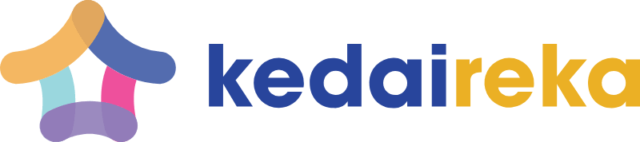

Professional Carrier

Intern Informatic Technology
2025 - Sekarang
Perumda Air Minum Danum Taka Kabupaten Penajam Paser Utara
Bertanggung jawab dalam pengelolaan infrastruktur IT, pemeliharaan sistem informasi, dan optimalisasi jaringan internal perusahaan.

Design Specialist UMKM
2024 - 2025
Kedaireka - Kabupaten Kutai Kartanegara
Memberikan solusi desain strategis dan pengembangan identitas visual untuk pelaku UMKM guna meningkatkan daya saing pasar digital.